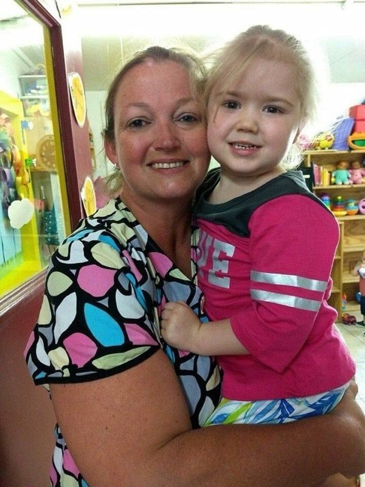
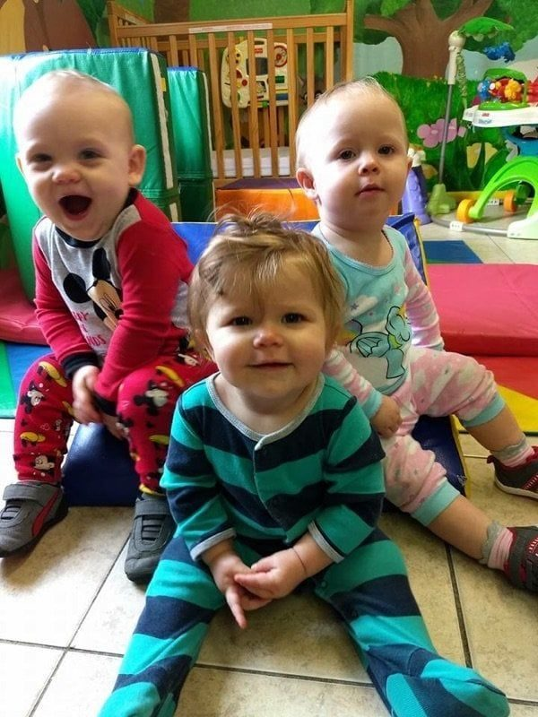
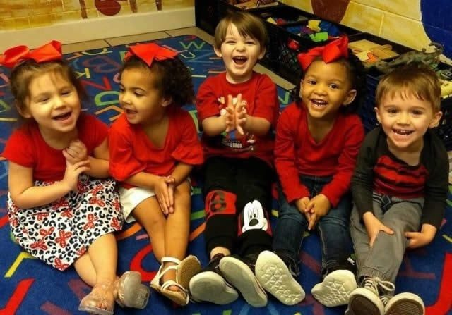
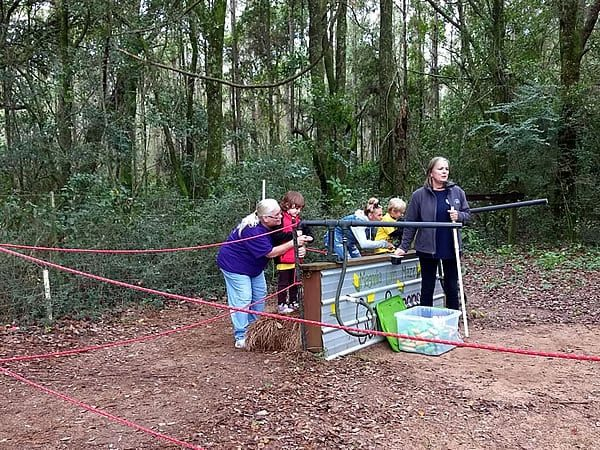

State licensed childcare
Care that grows with your child, from 6 weeks to 12 years.
Cradle 2 Crayons, Inc. is a year round childcare program in Foley. Children learn through play and exploration, in rooms set up for their age and stage.

State licensed childcare
Cradle 2 Crayons, Inc. is a year round childcare program in Foley. Children learn through play and exploration, in rooms set up for their age and stage.

4.8 stars from 36 reviews (public listing). One rating, shown here only.
The center runs a year round program for children ages 6 weeks to 12 years, so care does not stop when the school calendar changes.
Morning care for school age children before the school day begins, at the same Foley center.
After school care during the school year and a summer school program when school is out.
The center's own mission puts it plainly: children learn through play and exploration of their environment, and through time with other children. Care is built around that idea, with attention to each child's physical, cognitive, emotional, and social development.
Days include chances to build social skills, practice language, make things, move, and try new ideas, with staff who respond to each child's needs and interests.
Before a child enrolls, the center schedules a short pre-admission conference with the director or assistant director. It gives families a chance to tour the center and hear the program's goals and policies.
Owner and director: Renee Black. Assistant director: Ms. Lisa.



All photos on this page come from the center's own public website. No stock photos are used.
Questions about ages, programs, or a tour? Call the center and ask for the director. The pre-admission conference is the first step before enrollment.